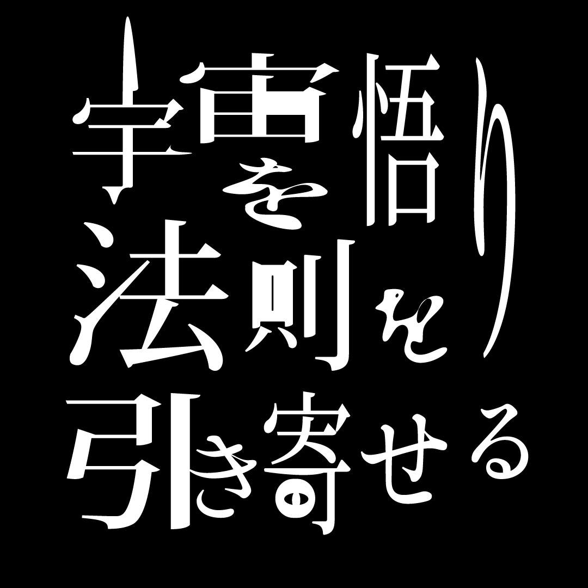

悟り、引き寄せ、宇宙法則を静かに読み解く
エックハルト・トール、ブッダの教えに共通する「いまここ」と自己の消滅を読み解く。
願望を明確にする技法が、なぜ執着を強化するのか。手放しの原理を再考する。
引き寄せとは力ではなく、抵抗を手放したあとに残る自然な流れのことである。
Vortex という概念の核にあるのは、自我の欲望ではなく、自我の後退である。
※現在準備中です
悟り、引き寄せ、意識、宇宙法則についての短い便り。 記事になる前の断章が、宇宙から届きます。